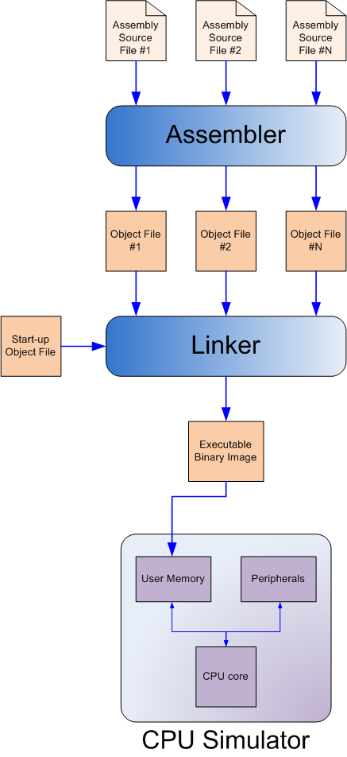

A few years ago I wrote about Luz - a self-educational project to implement a CPU simulator and a toolchain for it, consisting of an assembler and a linker. Since then, I received some questions by email that made me realize I could do a better job explaining what the project is and what one can learn from it.
So I went back to the Luz repository and fixed it up to be more modern, in-line with current documentation standards on GitHub. The landing README page should now provide a good overview, but I also wanted to write up some less formal documentation I could point to - a place to show-off some of the more interesting features in Luz; a blog post seemed like the perfect medium for this.
As before, it makes sense to start with the Luz toplevel diagram:
Luz is a collection of related libraries and programs written in Python, implementing all the stages shown in the diagram above.
The CPU simulator
The Luz CPU is inspired by MIPS (for the instruction set), by Altera Nios II (for the way "peripherals" are attached to the CPU), and by MPC 555 (for the memory controller) and is aimed at embedded uses, like Nios II. The Luz user manual lists the complete instruction set explaining what each instructions means.
The simulator itself is functional only - it performs the instructions one after the other, without trying to simulate how long their execution takes. It's not very remarkable and is designed to be simple and readable. The most interesting feature it has, IMHO, is how it maps "peripherals" and even CPU control registers into memory. Rather than providing special instructions or traps for OS system calls, Luz facilitates "bare-metal" programming (by which I mean, without an OS) by mapping "peripherals" into memory, allowing the programmer to access them by reading and writing special memory locations.
My inspiration here was soft-core embeddable CPUs like Nios II, which let you configure what peripherals to connect and how to map them. The CPU can be configured before it's loaded onto real HW, for example to attach as many SPI interfaces as needed. For Luz, to create a new peripheral and attach it to the simulator one implements the Peripheral interface:
class Peripheral(object):
""" An abstract memory-mapped perhipheral interface.
Memory-mapped peripherals are accessed through memory
reads and writes.
The address given to reads and writes is relative to the
peripheral's memory map.
Width is 1, 2, 4 for byte, halfword and word accesses.
"""
def read_mem(self, addr, width):
raise NotImplementedError()
def write_mem(self, addr, width, data):
raise NotImplementedError()
Luz implements some built-in features as peripherals as well; for example, the core registers (interrupt control, exception control, etc). The idea here is that embedded CPUs can have multiple custom "registers" to control various features, and creating dedicated names for them bloats instruction encoding (you need 5 bits to encode one of 32 registers, etc.); it's better to just map them to memory.
Another example is the debug queue - a peripheral useful for testing and debugging. It's a single word mapped to address 0xF0000 in the simulator. When the peripheral gets a write, it stores it in a special queue and optionally emits the value to stdout. The queue can later be examined. Here is a simple Luz assembly program that makes use of it:
# Counts from 0 to 9 [inclusive], pushing these numbers into the debug queue
.segment code
.global asm_main
.define ADDR_DEBUG_QUEUE, 0xF0000
asm_main:
li $k0, ADDR_DEBUG_QUEUE
li $r9, 10 # r9 is the loop limit
li $r5, 0 # r5 is the loop counter
loop:
sw $r5, 0($k0) # store loop counter to debug queue
addi $r5, $r5, 1 # increment loop counter
bltu $r5, $r9, loop # loop back if not reached limit
halt
Using the interactive runner to run this program we get:
$ python run_test_interactive.py loop_simple_debugqueue
DebugQueue: 0x0
DebugQueue: 0x1
DebugQueue: 0x2
DebugQueue: 0x3
DebugQueue: 0x4
DebugQueue: 0x5
DebugQueue: 0x6
DebugQueue: 0x7
DebugQueue: 0x8
DebugQueue: 0x9
Finished successfully...
Debug queue contents:
['0x0', '0x1', '0x2', '0x3', '0x4', '0x5', '0x6', '0x7', '0x8', '0x9']
Assembler
There's a small snippet of Luz assembly shown above. It's your run-of-the-mill RISC assembly, with the familiar set of instructions, fairly simple addressing modes and almost every instruction requiring registers (note how we can't store into the debug queue directly, for example, without dereferencing a register that holds its address).
The Luz user manual contains a complete reference for the instructions, including their encodings. Every instruction is a 32-bit word, with the 6 high bits for the opcode (meaning up to 64 distinct instructions are supported).
The code snippet also shows off some special features of the full Luz toolchain, like the special label asm_main. I'll discuss these later on in the section about linking.
Assembly languages are usually fairly simple to parse, and Luz is no exception. When I started working on Luz, I decided to use the PLY library for the lexer and parser mainly because I wanted to play with it. These days I'd probably just hand-roll a parser.
Luz takes another cool idea from MIPS - register aliases. While the assembler doesn't enforce any specific ABI on the coder, some conventions are very important when writing large assembly programs, and especially when interfacing with routines written by other programmers. To facilitate this, Luz designates register aliases for callee-saved registers and temporary registers.
For example, the general-purpose register number 19 can be referred to in Luz assembly as $r19 but also as $s1 - the callee-saved register 1. When writing standalone Luz programs, one is free to ignore these conventions. To get a taste of how ABI-conformant Luz assembly would look, take a look at this example.
To be honest, ABI was on my mind because I was initially envisioning a full programming environment for Luz, including a C compiler. When you have a compiler, you must have some set of conventions for generated code like procedure parameter passing, saved registers and so on; in other words, the platform ABI.
Linker
In my view, one of the distinguishing features of Luz from other assembler projects out there is the linker. Luz features a full linker that supports creating single "binaries" from multiple assembly files, handling all the dirty work necessary to make that happen. Each assembly file is first "assembled" into a position-independent object file; these are glued together by the linker which applies the necessary relocations to resolve symbols across object files. The prime sieve example shows this in action - the program is divided into three .lasm files: two for subroutines and one for "main".
As we've seen above, the main subroutine in Luz is called asm_main. This is a special name for the linker (not unlike the _start symbol for modern Linux assemblers). The linker collects a set of object files produced by assembly, and makes sure to invoke asm_main from the special location 0x100000. This is where the simulator starts execution.
Luz also has the concept of object files. They are not unlike ELF images in nature: there's a segment table, an export table and a relocation table for each object, serving the expected roles. It is the job of the linker to make sense in this list of objects and correctly connect all call sites to final subroutine addresses.
Luz's standalone assembler can write an assembled image into a file in Intel HEX format, a popular format used in embedded systems to encode binary images or data in ASCII.
The linker was quite a bit of effort to develop. Since all real Luz programs are small I didn't really need to break them up into multiple assembly files; but I really wanted to learn how to write a real linker :) Moreover, as already mentioned my original plans for Luz included a C compiler, and that would make a linker very helpful, since I'd need to link some "system" code into the user's program. Even today, Luz has some "startup code" it links into every image:
# The special segments added by the linker.
# __startup: 3 words
# __heap: 1 word
#
LINKER_STARTUP_CODE = string.Template(r'''
.segment __startup
LI $$sp, ${SP_POINTER}
CALL asm_main
.segment __heap
.global __heap
__heap:
.word 0
''')
This code sets up the stack pointer to the initial address allocated for the stack, and calls the user's asm_main.
Debugger and disassembler
Luz comes with a simple program runner that will execute a Luz program (consisting of multiple assembly files); it also has an interactive mode - a debugger. Here's a sample session with the simple loop example shown above:
$ python run_test_interactive.py -i loop_simple_debugqueue
LUZ simulator started at 0x00100000
[0x00100000] [lui $sp, 0x13] >> set alias 0
[0x00100000] [lui $r29, 0x13] >> s
[0x00100004] [ori $r29, $r29, 0xFFFC] >> s
[0x00100008] [call 0x40003 [0x10000C]] >> s
[0x0010000C] [lui $r26, 0xF] >> s
[0x00100010] [ori $r26, $r26, 0x0] >> s
[0x00100014] [lui $r9, 0x0] >> s
[0x00100018] [ori $r9, $r9, 0xA] >> s
[0x0010001C] [lui $r5, 0x0] >> s
[0x00100020] [ori $r5, $r5, 0x0] >> s
[0x00100024] [sw $r5, 0($r26)] >> s
[0x00100028] [addi $r5, $r5, 0x1] >> s
[0x0010002C] [bltu $r5, $r9, -2] >> s
[0x00100024] [sw $r5, 0($r26)] >> s
[0x00100028] [addi $r5, $r5, 0x1] >> s
[0x0010002C] [bltu $r5, $r9, -2] >> s
[0x00100024] [sw $r5, 0($r26)] >> s
[0x00100028] [addi $r5, $r5, 0x1] >> r
$r0 = 0x00000000 $r1 = 0x00000000 $r2 = 0x00000000 $r3 = 0x00000000
$r4 = 0x00000000 $r5 = 0x00000002 $r6 = 0x00000000 $r7 = 0x00000000
$r8 = 0x00000000 $r9 = 0x0000000A $r10 = 0x00000000 $r11 = 0x00000000
$r12 = 0x00000000 $r13 = 0x00000000 $r14 = 0x00000000 $r15 = 0x00000000
$r16 = 0x00000000 $r17 = 0x00000000 $r18 = 0x00000000 $r19 = 0x00000000
$r20 = 0x00000000 $r21 = 0x00000000 $r22 = 0x00000000 $r23 = 0x00000000
$r24 = 0x00000000 $r25 = 0x00000000 $r26 = 0x000F0000 $r27 = 0x00000000
$r28 = 0x00000000 $r29 = 0x0013FFFC $r30 = 0x00000000 $r31 = 0x0010000C
[0x00100028] [addi $r5, $r5, 0x1] >> s 100
[0x00100030] [halt] >> q
There are many interesting things here demonstrating how Luz works:
- Note the start up at 0x1000000 - this is where Luz places the start-up segment - three instructions that set up the stack pointer and then call the user's code (asm_main). The user's asm_main starts running at the fourth instruction executed by the simulator.
- li is a pseudo-instruction, broken into two real instructions: lui for the upper half of the register, followed by ori for the lower half of the register. The reason for this is li having a 32-bit immediate, which can't fit in a Luz instruction. Therefore, it's broken into two parts which only need 16-bit immediates. This trick is common in RISC ISAs.
- Jump labels are resolved to be relative by the assembler: the jump to loop is replaced by -2.
- Disassembly! The debugger shows the instruction decoded from every word where execution stops. Note how this exposes pseudo-instructions.
The in-progress RTL implementation
Luz was a hobby project, but an ambitious one :-) Even before I wrote the first line of the assembler or simulator, I started working on an actual CPU implementation in synthesizable VHDL, meaning to get a complete RTL image to run on FPGAs. Unfortunately, I didn't finish this part of the project and what you find in Luz's experimental/luz_uc directory is only 75% complete. The ALU is there, the registers, the hookups to peripherals, even parts of the control path - dealing with instruction fetching, decoding, etc. My original plan was to implement a pipelined CPU (a RISC ISA makes this relatively simple), which perhaps was a bit too much. I should have started simpler.
Conclusion
Luz was an extremely educational project for me. When I started working on it, I mostly had embedded programming experience and was just starting to get interested in systems programming. Luz flung me into the world of assemblers, linkers, binary images, calling conventions, and so on. Besides, Python was a new language for me at the time - Luz started just months after I first got into Python.
Its ~8000 lines of Python code are thus likely not my best Python code, but they should be readable and well commented. I did modernize it a bit over the years, for example to make it run on both Python 2 and 3.
I still hope to get back to the RTL implementation project one day. It's really very close to being able to run realistic assembly programs on real hardware (FPGAs). My dream back then was to fully close the loop by adding a Luz code generation backend to pycparser. Maybe I'll still fulfill it one day :-)